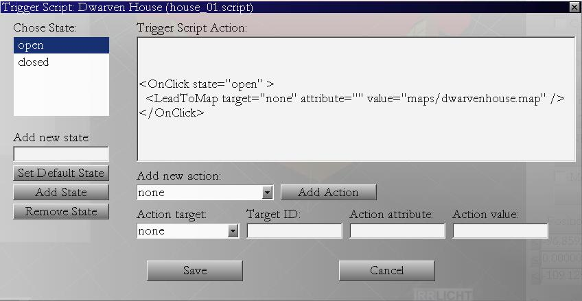
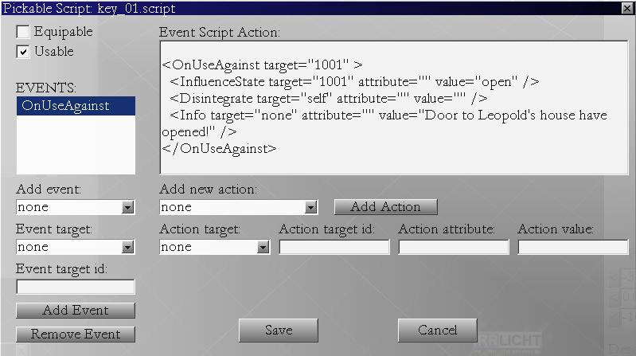

In this tutorial, we gonna make some scripts for trigger objects.
Trigger object is game object that can be clicked on to produce some action.
It is static object (can not be picked up) but provides certain interaction.
Here are several example trigger objects:
- "Fountain of Health" - when player clicks on it it increases health to maximum.
- Door - take player to another level.
- Lever - opens a door.
- Well - player drinks water.
- Merchant - trading dialog opens.
- Button - fireball is fired toward player.
Trigger object can have various states, for example, door can be locked or unlocked.
If player clicks on locked door message is displayed: "Door is locked." and nothing happens.
If players clicks on unlocked door, he is taken to another level.
Another example would be town square statue, you could define two states for it:
Ok and Desecrated. If statue is desecrated, all townsfolk will be at angry state,
only old apotekarus Gideon will be secretly happy, and willing to sell you a potion
for lower price then usual. You see, the posibilities are endless, and here is how you
define trigger script for simple example "locked house":
You gonna need one house and one key on the map for this tutorial.
Click on the house, select Trigger checkbox and click "Trigger Script" button.
This dialog comes up:

Note: Script is already written, so close this dialog, delete file media/scripts/static/house_01.script and start again.
First you should add states to your trigger object. In "Add new state" edit box write "open"
and click "Add State" button. Then type "closed" and add that state too.
Select "closed" state and click "Set Default State". This will make house locked when game
starts. Add action to closed state: Select "Info" from the list of actions and type
"House is locked, you'll need a key" in the value edit box.
Select "open" state and add different action to this state: Select "LeadToMap" action, and
type in value - name of the map to move to: "maps/dwarven_house.irr".
This is it for the house. Save the trigger script and close dialog.
You can find your house script in media/Scripts/Static directory.
Leave it there for game example to find it.
Now we need to make a key change the state of the house to open!
Memorize house id, you gonna need it bit later (you can find it in properties window when house is selected).
Select key, bring up Pick Script dialog.

Note: Script is already written, so close this dialog, delete file media/scripts/pickables/key_01.script and start again.
Check key as "Usable".
Select event "OnUseAgainst" and type in Event target id to be id of the house (memorized).
Add this event.
Add action to it: select "InfluenceState" action from the combo box,
select "id" from the action target combo,
type id of the house (memorized) in action target id,
attribute can be left blank.
enter value "open".
Add action.
Select new action from "Add New Action", select "Info".
Action target should be "none". (But generally it is ignored)
Action attribute is also empty.
Action value should be the message you want to display: "Door to red cottage have opened!"
Click "Add Action" button.
Finally, select Disintegrate action.
Set Action target to be "self".
Click "Add Action" button.
This will cause key to disappear after usage.
Save your map, edit game_config.xml to point to your map, and start game example
to see how your script behaves in the game.
Notice you could write anything for state names instaed of "open" and "close",
it could be "locked", "unlocked", and it could even have more states like "semilocked"
Try making key change state of the house from locked to semilocked, and then mushroom
finally changing state of the house from semilocked to unlocked.
You will see mushroom will chage state of the house to unlocked no matter what state
the house is in. If you want mushroom to be ineffective in locked state,
and to work only in semilocked state, you'll need to change mushroom script:
Type in attribute value: semilocked.
Adding attribute value will change state of target object
only if it is in the specified 'attribute' state.
Petar Bajic
MPE (C) All Rights Reserved
Homepage: www.mystic-peanut.com
July, 21 2008.
| << Tutorial 3: Pickable Scripts | Tutorial 5: NPC Conversation >> |
Index

Download Safe Software